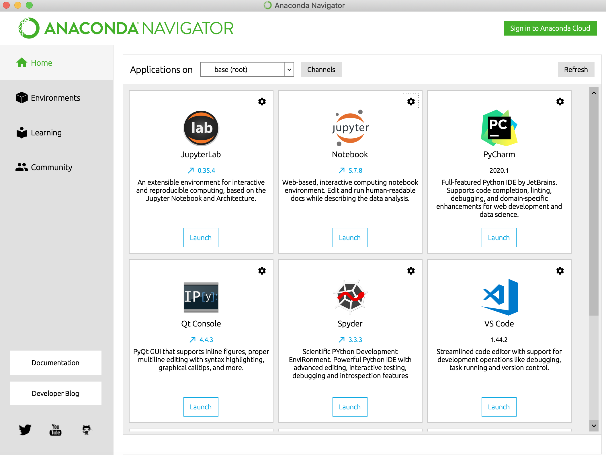
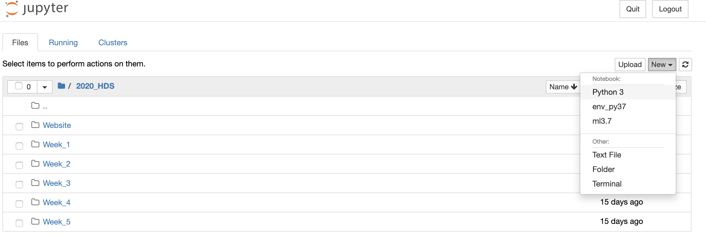
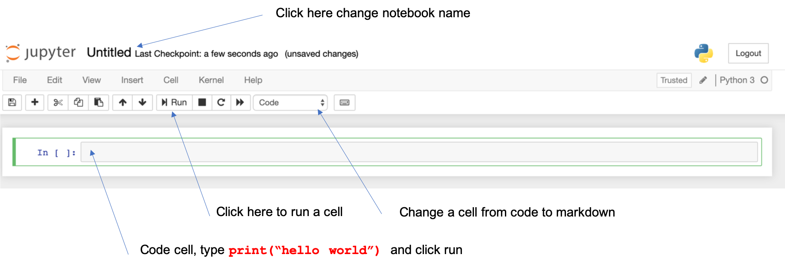

Hands on Data Science w. Python
2020-05-17
Introduction
About this course
This is an intense and action-packed course for anyone interested in data science or pursuing a career in data science. This course has been designed to provide you a solid foundation in real-world Data Science and Machine Learning techniques. You will learn Python - no prior programming knowledge is necessary. You’ll get hands on experience using a variety of methods including CART, Random Forest, Gradient Boosting Machines (GBM) and others. Every week starts off with a data set and a challenge to build the best predictive model. Along the way we’ll cover complete data science process of exploration, feature engineering, partitioning, model training, hyperparameter tuning, evaluation and explanation.
Download and Install Python
We will be making use of Python 3.7, the easiest way to get your hands on it is to download it from Anaconda. Once downloaded follow the instructions to setup and install python 3.7. Once installed fire up Anaconda Navigator. We’ll be using Jupyter notebooks going forward.

Your First Notebook
Launch Jupyter, and create your first notebook.
Note: you may be prompted for a token in order to log into your notebook, you can find that in the terminal that juypter opens up on your computer

Now that you’ve gotten your notebook open, here’s the minimum of what you need to know.
